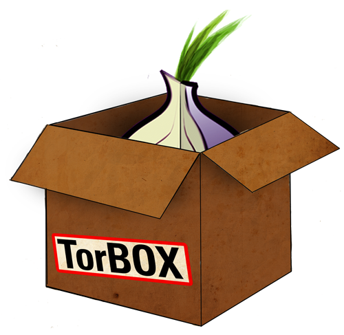
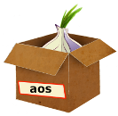
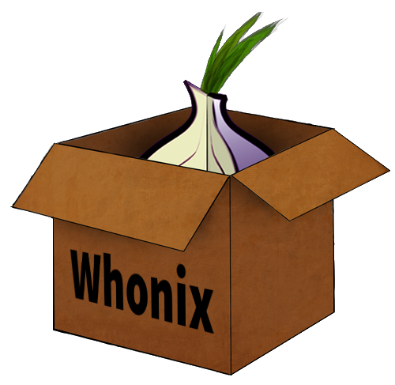
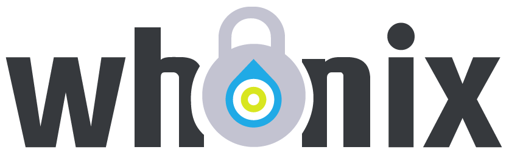

We believe security software like Whonix needs to remain Open Source and independent. Would you help sustain and grow the project? Learn more about our 11 year success story and maybe DONATE!
A chronicle of the evolution of Whonix from its inception as TorBOX, through its transition to aos, and ultimately to the establishment of Whonix.
Brief Whonix History
Founded: 11 January 2012 [1]
The genesis of Whonix can be traced back to its initial conception as TorBOX, a name that reflected its primary goal of simplifying the use of Tor as a Transparent Proxy. The project began not as a distinct software distribution, but rather as a comprehensive wiki resource aimed at demystifying the process for end-users.
As the project matured and its scope expanded, the name was changed to aos, an acronym for anonymous operating system, signaling a shift toward a more ambitious, standalone operating system designed for anonymity.
In 2012, the project underwent a final transformation, adopting the current name Whonix.
Initial Concept
The inception of Whonix was rooted in a vision by founder Patrick Schleizer [2]: The foundational vision for Whonix was to employ (virtual) machines in a manner that would guarantee all internet traffic was reliably and exclusively channeled through Tor, offering robust protection against IP address and DNS leaks. This framework was designed to eliminate the need for configuring individual applications with proxy settings, a process often fraught with potential errors and difficult to verify for absolute security against clearnet IP leaks.
Those interested in the origins of the project can refer to the earliest version of the torproject.org TorBOX wiki site, which stands as a record of the project's initial concept and simplicity as of 11 January 2012.
Other contributors quickly enhanced the wiki article. [1] As the TorBOX wiki site's popularity increased, so did the volume of information and its complexity. The complex nature of the instructions necessitated the provision of leak tests, which were conducted by smarm. Anonymous developed a shell script to automate many of the steps. Anonymous also created the first downloadable TorBOX images.
TorBOX Development
In the past, articles were provided on how to manually build TorBOX via shell scripts, as well as how to use the downloads. It became too burdensome to maintain the comprehensive, manual build instructions for TorBOX, while also updating the shell scripts. The TorBOX developers agreed to drop the manual creation instructions in favor of the shell scripts. Nothing valuable was lost during this transition. The full documentation, along with explanations and justifications for each and every step, was migrated into the shell scripts. Since all shell scripts are written in bash, anyone is able to read them and complete steps manually on the command line.
The shell scripts steadily grew in number and complexity as additional functionality was added, or changes were made to increase TorBOX safety in line with security research. After TorBOX 0.1.3 was released, no one was willing to create new images because the creation process was tiresome. It is time-consuming to install the operating system manually, place the scripts inside the virtual machines, and then run them for every improvement. The TorBOX developers therefore agreed to fully automate the build process. It also became clear that TorBOX should no longer consist of only two shell scripts - it was necessary to split the big scripts into many fine-grain files. A dedicated TorBOX website for development-related discussion and source code commits was then established, as the wiki was deemed unsuitable for this purpose.
The following resources provide further information on early TorBOX and Whonix development, including package information and news:
Project Renaming
Patrick Schleizer was privately contacted by Andrew Lewman (an ex-director of The Tor Project) and advised it would be better if TorBOX was renamed. Although the TorBOX website announced that it was unaffiliated with the Tor project, some people had mistakenly connected the two. A new project name had to be found quickly and Schleizer hastily renamed the project to aos, an acronym which stood for "anonymous operating system". [3]
This choice was sub-optimal because search engines did not provide any relevant results - it was already used for too many other things. [4] The tor-talk mailing list was consulted about a suitable new name for an anonymous operating system project and "Whonix" was one of the many suggestions provided. This term was among a handful that were unused in search engines, leading Schleizer to adopt it as the new project name. The name is pronounced as "Who Nix" - a combination of two words, who ("what person/s") and nix ("nothing"). [5]
Figure: Stylized Project Logo History (more versions on Dev/Logo)
    Whonix
Logo since 2022 Whonix Logo since
2022Whonix
Banner since 2022 Whonix Banner since 2022
Whonix
Logo since 2022 Whonix Logo since
2022Whonix
Banner since 2022 Whonix Banner since 2022
History ToDo
TODO: Discuss TransPort, SocksPort, Transparent Proxy, and Isolating Proxy developments.
Kicksecure

Redirection to Kicksecure Documentation
- Introduction: Whonix Documentation Introduction, User Expectations, Footnotes and References, User Expectations - What Documentation Is and What It Is Not
- Whonix is based on Kicksecure™: Whonix is built on top of Kicksecure. This means it uses many of the same security tools, design concepts, and configurations.
- Kicksecure is based on Debian: Kicksecure is developed using Debian as its base. Debian is a widely used, stable, and free Linux operating system.
- Inheritance: As a result, Whonix is also based on Debian.
- Debian is GNU/Linux-based: Debian is built using the GNU/Linux operating system. GNU provides essential tools and Linux is the system's kernel (core).
- Shared documentation benefits: Since each system is based on the one below it, a lot of documentation and guides are shared. This reduces the need to duplicate information.
- Inherited documentation: Most instructions and explanations are inherited from Kicksecure or Debian, unless otherwise specified.
- Shared principles: The systems share similar security goals and setup instructions. In most cases, users can follow Kicksecure documentation when using Whonix.
- Keep using Whonix: This does not mean users should switch to Kicksecure. This page only points to related, helpful information.
- Where to apply the instructions: Follow the instructions inside Whonix unless specifically stated otherwise.
- Wiki editors notice: This information is pulled from a reusable wiki template: upstream_wiki. (See which pages use this.)
- Comparison: Whonix versus Kicksecure
- Documentation compatibility: Because Whonix is based on Kicksecure, you can often follow Kicksecure's instructions as long as you apply them in the right place.
- Summary: Whonix is built on top of Kicksecure, which itself is based on Debian. Debian is a GNU/Linux operating system. This layered design means Whonix inherits many features, tools, and documentation from both Kicksecure and Debian.
- Click here: Visit the related page in the Kicksecure wiki for full documentation and background:
 History
History
- Note: Re-interpretation...
Apply the instructions inside Whonix, not inside Kicksecure.
Kicksecure: Perform these steps inside Kicksecure.
Instead, apply the steps inside Whonix-Workstation.
Kicksecure for Qubes: Perform these steps inside Qubes
kicksecure-18Template.
Instead, use the whonix-workstation-18 Template for
these steps.
Old Forums
- https://web.archive.org/web/20211022214750/https://sourceforge.net/projects/whonix/discussion/general/?page=11
- https://web.archive.org/web/20130908152334/https://www.whonix.org/wiki/Special:AWCforum
- https://web.archive.org/web/20131226064134/https://www.whonix.org/wiki/Special:AWCforum
- https://web.archive.org/web/20131224172827/https://www.whonix.org/wiki/Special:AWCforum/st/id262/updating_TOR_browser_error...html
Project Age Wiki Template
14years- Manually maintained. Might be updated late.
Footnotes
- This can be verified by using the Tor Project's wiki: * history
feature * timeline
feature **
**Jan 11, 2012:
2:55 AM doc/TorBOX created by hmoh
- Whonix developer, previously known as proper in the past, renamed himself to adrelanos, published his OpenPGP key on 29 May 2012 (wiki history). Revealed his identity on 18 January 2014. Patrick Schleizer posted his OpenPGP key transition message on the same day, signed by both his old and new key.
- Technically "aos" is an initialism, but this term is not frequently used.
- Further, using an uncapitalized project name was inconsistent with grammatical conventions regarding capitalization of words at the beginning of a sentence.
- The "W" is silent.
License
Whonix History wiki page Copyright (C) Amnesia
Whonix History wiki page Copyright (C) 2012 - 2026 ENCRYPTED SUPPORT LLC <adrelanos(at)whonix.org(Replace(at)with@.)Please DO NOT use e-mail for one of the following reasons:Private Contact: Please avoid e-mail whenever possible. (Private Communications Policy)User Support Questions: No. (See Support.)Leaks Submissions: No. (No Leaks Policy)Sponsored posts: No.Paid links: No.SEO reviews: No.Advertisement deals: No.Default application installation: No. (Default Application Policy)>This program comes with ABSOLUTELY NO WARRANTY; for details see the wiki source code.
This is free software, and you are welcome to redistribute it under certain conditions; see the wiki source code for details.
Categories: Documentation